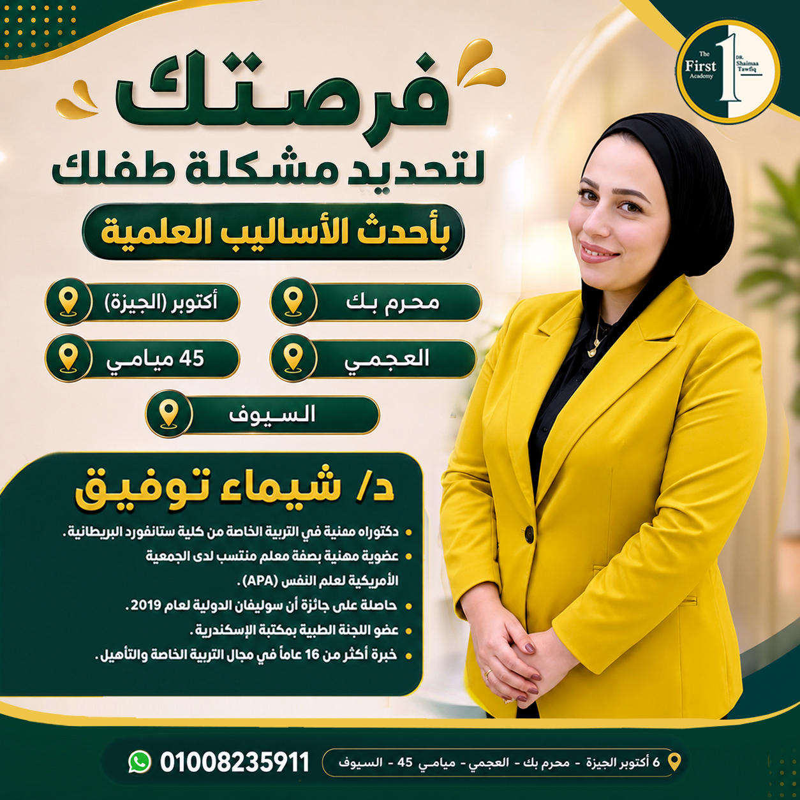

كل طفل بيتعلم ويتطور بطريقته... احنا هنا نساعده يلاقيها
من جلسات التخاطب والتأهيل لمتابعة فرط الحركة وتشتت الانتباه، فريقنا المتخصص بيبني لكل طفل ومراهق خطة على مقاسه، وبيتابع أهله خطوة بخطوة.
The First Academy... منظومة متكاملة لرعاية وتأهيل طفلك ومرافقة أسرته في رحلة التطور
في The First Academy بنؤمن إن كل طفل عنده قدرات تستحق الاكتشاف، وإن التدخل المناسب في الوقت المناسب ممكن يصنع فرقًا حقيقيًا في حياته.
إحنا منظومة متخصصة في تقييم وتأهيل الأطفال والمراهقين، بنقدم خدمات متكاملة من خلال فريق متعدد التخصصات، وخطط تدخل فردية بتتحدد وفقًا لاحتياجات كل حالة وقدراتها، مع متابعة مستمرة لمراحل التطور ومشاركة الأسرة في رحلة التأهيل.
هدفنا مش مجرد حضور جلسات، لكن تحقيق تقدم حقيقي في مهارات الطفل، واستقلاليته، وتواصله، وتفاعله مع البيئة المحيطة.
-
فريق متخصص لكل احتياجبيضم فريقنا متخصصين في مجالات التأهيل والتدخل النمائي، وتنمية المهارات، والتخاطب، وتعديل السلوك، وصعوبات التعلم، والدعم النفسي، والتكامل الحسي، مع الاستعانة بالمختصين المناسبين وفقًا لاحتياجات كل حالة. بنعمل بروح الفريق، علشان تكون خطة الطفل أكثر تكاملًا واتساقًا، ويكون لكل تخصص دور واضح في تحقيق أهدافه.
-
برامج فردية تناسب قدرات كل طفلمش كل طفل زي التاني، حتى لو كان عنده نفس التشخيص. علشان كده بنعتمد على تقييم احتياجات الطفل ومهاراته، وتحديد أهداف واقعية قابلة للمتابعة، وتقسيم الأطفال والمجموعات وفقًا لمستوى الأداء والاحتياجات، مش العمر فقط.
-
التقييم والمتابعة المستمرةرحلة التأهيل بتبدأ بفهم دقيق لاحتياجات الطفل، وبتستمر من خلال متابعة تطوره وتحديث أهداف الخطة وفقًا لنتائجه. بنحرص على تقديم تقارير توضح مستوى الأداء، ونقاط القوة، والجوانب التي تحتاج إلى دعم، مع إرشاد الأسرة لكيفية مساندة الطفل في المنزل والحياة اليومية.
-
شراكة حقيقية مع الأسرةالأسرة جزء أساسي من رحلة نجاح الطفل؛ علشان كده بنهتم بالتواصل المستمر مع أولياء الأمور، وتوضيح الأهداف والخطوات، وتقديم الإرشادات التي تساعد على تعميم المهارات خارج الجلسات.
لأن كل خطوة في رحلة طفلك تستحق الاهتمام
بنشتغل علشان نساعد كل طفل يوصل لأفضل مستوى ممكن من قدراته، ونساند كل أسرة بالعلم، والاهتمام، وخطة واضحة تناسب احتياجاتها.
ابدأ رحلة طفلك معانا، واحجز موعدًا للتقييم والتعرف على البرنامج الأنسب لاحتياجاته.
خدمات متكاملة للتشخيص والقياس والتأهيل وتنمية القدرات
في The First Academy بنقدم مجموعة متكاملة من الخدمات المتخصصة للأطفال والمراهقين، من خلال التقييم الفردي، وتحديد الاحتياجات، ووضع خطط التدخل والتأهيل، ومتابعة التقدم بالتعاون مع الأسرة.
التشخيص الإكلينيكي وفقًا لمعايير DSM-5-TR
تقييم إكلينيكي متخصص للاضطرابات النمائية والنفسية والسلوكية، بالاستناد إلى معايير الدليل التشخيصي والإحصائي للاضطرابات النفسية DSM-5-TR، مع دراسة التاريخ النمائي والطبي والسلوكي، وجمع المعلومات من المصادر المناسبة، للوصول إلى الاستنتاجات والتوصيات الإكلينيكية في حدود تخصص وصلاحيات المختص.
التقييم النمائي والتربوي
تقييم مهارات الطفل في مجالات التواصل والانتباه والإدراك والمهارات الحركية والاستقلالية والمهارات الأكاديمية، بهدف تحديد مستوى الأداء والاحتياجات النمائية والتعليمية ووضع التوصيات المناسبة.
اختبارات الذكاء والقياس النفسي
تطبيق وتفسير أدوات قياس القدرات المعرفية والذكاء والجوانب النفسية والسلوكية بواسطة المختصين المؤهلين، وفقًا لطبيعة الحالة وأهداف التقييم.
برامج التدخل المبكر وتنمية المهارات
برامج تستهدف تنمية المهارات الأساسية والإدراكية والتواصلية والحركية ومهارات اللعب والاستقلالية، وفقًا لمستوى الطفل النمائي واحتياجاته الفردية.
جلسات التخاطب وتنمية اللغة والتواصل
برامج لتنمية اللغة الاستقبالية والتعبيرية، وتحسين النطق ومخارج الأصوات، وتطوير مهارات التواصل اللفظي وغير اللفظي وفقًا لاحتياجات كل حالة.
برامج التربية الخاصة والتأهيل
خطط تأهيل فردية للأطفال ذوي الاحتياجات النمائية والتعليمية، بهدف تنمية قدراتهم ومهاراتهم المعرفية والحياتية والتواصلية، ودعم استقلاليتهم ومشاركتهم في البيئة المحيطة.
برامج تعديل السلوك
برامج تدخل سلوكي تستهدف فهم السلوك وتحديد العوامل المرتبطة به، وتنمية السلوكيات البديلة والمهارات التكيفية، باستخدام استراتيجيات مناسبة لاحتياجات الطفل وبيئته.
تنمية الوظائف التنفيذية والانتباه
برامج تستهدف تطوير مهارات التخطيط والتنظيم والذاكرة العاملة والمرونة المعرفية وضبط الاستجابة وحل المشكلات، بما يتناسب مع عمر الطفل ومستوى أدائه.
برامج صعوبات التعلم والدعم الأكاديمي
برامج متخصصة لتنمية مهارات القراءة والكتابة والرياضيات، ومعالجة جوانب الضعف الأكاديمي من خلال أهداف تدريجية وأساليب تعليمية تتناسب مع احتياجات المتعلم.
برامج المهارات الأساسية وما قبل الأكاديمية
برامج لتنمية الانتباه والإدراك والتمييز والمطابقة والتصنيف والتآزر البصري الحركي ومهارات الاستعداد للقراءة والكتابة والحساب.
برامج التكامل الحسي والتنظيم الحركي
تدخلات وأنشطة متخصصة لدعم معالجة المعلومات الحسية والتخطيط الحركي والتآزر والتوازن والمشاركة في أنشطة الحياة اليومية، وفقًا للتقييم واحتياجات الحالة.
مجموعات تنمية المهارات الاجتماعية
برامج فردية وجماعية منظمة لتنمية التواصل والتفاعل الاجتماعي وتبادل الأدوار والتعاون وفهم المشاعر والتعامل مع المواقف الاجتماعية.
الاستشارات النفسية والإرشاد الأسري
خدمات دعم وإرشاد نفسي وأسري وتربوي لمساعدة الأسر على فهم احتياجات أبنائهم، والتعامل مع التحديات النفسية والسلوكية، وتطبيق استراتيجيات داعمة في المنزل والبيئة اليومية، وفقًا للتخصص المهني.
الدمج المدرسي وخدمات الشادو تيتشر
خدمات دعم الطفل داخل البيئة التعليمية، بهدف تعزيز المشاركة والاستقلالية والتواصل والاندماج في الأنشطة المدرسية، بالتنسيق مع الأسرة والمدرسة وفقًا لاحتياجات الطفل.
الحضانة وبرامج الرعاية المتخصصة
برامج رعاية وتنمية للأطفال في بيئة منظمة، تراعي الفروق الفردية وتدعم النمو والتواصل والاستقلالية، وفقًا لطبيعة البرنامج واحتياجات كل طفل.
التدريب والدبلومات المهنية
برامج تدريبية ودبلومات وورش عمل متخصصة في التربية الخاصة والتدخل النمائي والتخاطب وتعديل السلوك والتقييم وتنمية المهارات، بهدف تطوير الكفاءات العلمية والتطبيقية للعاملين والمهتمين بالمجال.
كل طفل يستحق أن تُفهم احتياجاته وتُنمّى قدراته. نرافق الطفل وأسرته في رحلة تبدأ بفهم الاحتياجات، وتمر بالتدخل والتأهيل، وتستمر بمتابعة التقدم وتطوير الأهداف وفقًا للنتائج.
مركز متخصص للأطفال والمراهقين
برامجنا مصممة لمرحلتين عمريتين مختلفتين، وكل مرحلة ليها أسلوب متابعة وجلسات يناسبها.
لكل احتياج... وحدة متخصصة ليه
The First Academy مقسّمة لوحدات متخصصة، كل وحدة ليها صفحتها وفريقها، دوس على أي وحدة تعرف تفاصيلها وتتواصل معاها مباشرة.
وحدة الشادو تيتشر
توفير وتوظيف أخصائيين شادو تيتشر للمدرسة والحضانة والمنزل.
اعرف أكترفرست للقيادة العقلية
برامج لتنمية قدرة الطفل على قيادة نفسه واتخاذ قراراته.
اعرف أكترفرست للمهارات الاجتماعية
تعليم الطفل التواصل وبناء الصداقات مع أقرانه.
اعرف أكترفرست للمهارات الأولية والتدخل المبكر
متابعة مبكرة لأطفال ما قبل المدرسة لبناء المهارات الأساسية.
اعرف أكترفرست للدعم النفسي
جلسات دعم نفسي للطفل والأسرة على حد سواء مع د. هدير محمد.
اعرف أكترفرست للتدريب وإعداد الكوادر
تأهيل وتدريب الأخصائيين الجدد على أعلى مستوى.
اعرف أكترفرست للتأهيل الخطابي المتكامل
برامج تخاطب وتأهيل لغوي شاملة لكل الأعمار.
اعرف أكترفرست للتنظيم العصبي
برامج المعالجة الحسية والسايكوموتر وBrain Gym والمنعكسات للتوحد وADHD.
اعرف أكتروحدة الرعاية المتخصصة
برنامج متكامل بمنهجية بافاريا الألمانية لتنمية قدرات الطفل في خمس مجالات أساسية.
اعرف أكترخطوات بسيطة عشان نبدأ مع طفلك
تواصل معانا
اتصل أو ابعت رسالة على أي فرع، وهنسمع منك تفاصيل حالة طفلك.
مقابلة شخصية وتقييم
يقابل الطفل فريقنا المتخصص، وناخد تقرير أولي واضح عن قدراته واحتياجاته.
خطة تأهيل مخصصة
بنحدد البرامج والجلسات المناسبة، ونوزع الطفل على المجموعة الأقرب لمستواه.
بداية المتابعة
الجلسات تبدأ مع تقارير دورية بعدية، عشان الأهل يبقوا شايفين التطور أول بأول.
Feedback
بالاهتمام والحب نصنع الفرق.. وبالعلم نبني المهارات ونصنع المستقبل.
هتلاقي The First Academy قريبة منك
5 فروع بتغطي أماكن مختلفة، وكل الفروع بتتواصل من خلال نفس رقم الواتساب.
6 أكتوبر – الجيزة
6 October – Giza افتح الخريطة ↗محرم بك
Moharram Bek افتح الخريطة ↗العجمي
Agami افتح الخريطة ↗ميامي 45
Miami 45 افتح الخريطة ↗السيوف
El Seouf افتح الخريطة ↗
عايز تسأل عن حالة طفلك؟ احنا في انتظارك
ابعتلنا إيميل أو كلمنا على أي فرع، أو تابعنا على السوشيال ميديا عشان تشوف يومياتنا مع الأطفال.
infothefirst.academy55@gmail.com